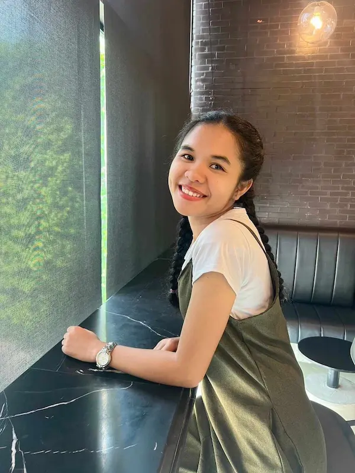

Chayanee Ratmaet | WDD 130

My name is Chayanee Ratmaet and I am from Thailand, I am living in Bangkok Thailand. I work and study at the same time, so on the week day when I have free time I like watching anime and drawing pictures. On my day off, I like to play badminton with friends and spent time with my family. Sometimes I go to the park to exercise. I also like to travel and explore new places, especially nature spots like mountains and beaches. I also enjoy trying new foods and learning about different cultures. In my country food is very important and we have a lot of delicious dishes to try. It is like our love language.